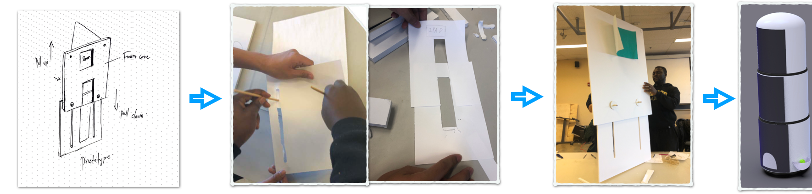

Overview
For four weeks my team and I explored how to conduct experience prototypes and other UX research methods and how to use IOT in areas that could be relevant to users in the near future. In the project, we designed an interactive system for the owner and the dog which allows them to chat and play when the user is away.
Type
University projectRole
UI / UX- User experience
- Visual design
Problem Space
For thousands of years, dogs have been regarded as human’s best friend. However, periods of separation between dogs and their owners can cause anxiety and resultant behavioral changes for both. Whether for a short term period such as the daily time spent at work, a spontaneous day out, or perhaps for longer term in some cases, owners inevitably have to be away from their dogs at home at some point, with the dog’s being alone in a lot of cases. For owners, the possible anxiety in making plans and leaving their dog/s alone at home for a few hours, can obstruct their personal lives through times such as rejecting a day out with friends out of fear for the feelings of their dog being left at home alone. Another related issue is the loss of a daily companion for those who move away from the home where their dog remains, such as moving to college. Going from seeing their dog on a daily basis, to once perhaps every 4 months, can be a great source of sadness for that individual.
Our Challenge: To use physical prototyping as a research-through-design method, in conceptualizing an aid to owners and their dogs to facilitate meaningful interaction during short and long-term periods of separation.
Solution
K9 M8 is an interactive robot that equips multiple screens to present an embodied user's image to dogs. Interactive games are integrated into the robot through which the user can play with their dog remotely to ease the separation anxiety for both humans and dogs.
Concept Overview
We want to make a system combined with an embodied video chat and an interactive game, which allow the user interact with the dog remotely. It can move around and show the real scale image of the user. The user and the dog can have a video chat and play games together even if the user is away. At the same time, we want the dog has the opportunity to initiate the interaction as well (this is what we learned from the previous exercise, critical design. It is unfair that only one side of the interaction, human, can initiate the interaction). In this project, we are trying to prototype this experience.
Initial Research
Literature Review
In our initial research, our goal was to gain an overview of the human-dog relationship, which has been an age-old friendship between two species. We also wanted to understand the effects of the separation between a dog and human drawing from several academic papers this was a deeper aspect of our research. This would aid us to model our solution beyond the physical phase into a deeper emotional level. Beyond the academic papers, we search on blogs, mazagines social media. We gain relevant insights with the key ones below.
Key research questions
- Effects of separation anxiety on dogs behavior and health.
- Effects of separation anxiety on owners.
- Ability of dogs to understand and interact with owner through digital screen.
User Interviews
We spoke to 4 different owners of dogs (2 living in the same household as their dog/s, and 2 living longer distances away) to gain a greater understanding of the relationship they have with their respective dogs, as well as the ways in which being a companion to and being responsible for the dog’s wellbeing brings joy to their life. We also sought to uncover some of the emotions they associated with having to spend intermittent to long periods of time away from their dog/s, not only their own, but what they also knew or speculated about what goes in the mind of their canine friends during such times.

Existing Products
Video Chat
It allow the user to monitor the sound and movement of their pets, or it may allow the user to “talk to” their dogs. However, we find what is missing is most of these video chat systems lack true embodiment of the owner. As we stated before, scholars believed this may cause confusion or even anxiety to dogs. Another missing point is that in some systems, dogs cannot initiate the interaction, they cannot “call” the user. What they can do is only waiting for their owners’ call. And in systems which allow dogs initiate the interaction, the mechanism is hard to learn for dogs.
Automated Fetch
For example, a automatic fetching system can make the dog busy when the owner is away. They can throw a tennis ball automatically and the dog may go and fetch the ball. However, the owner does not participate the activity.
Owner Types
We leveraged findings from our initial research to develop two fictional personas who accurately depicted the potential user traits that would aid us in the next stages of the design project. More importantly, these persona's clearly aligned to the needs required to be addressed in the ideation and design of the solution.


Problem Aim: To use physical prototyping as a research-through-design method, in conceptualizing an aid to owners and their dogs to facilitate meaningful interaction during short and long-term periods of separation.
Ideation and refinements
In our secondary research, we found that disembodied screen may cause confusion for the dog. Thus, we decided that we should use an embodied, human-scale screen to present the owner to the dog. Also, based on our research, we believe combining interactive devices into the system will improve the engagement of dogs. Thus, the tug of war was integrated into our system. The owner can play ‘tug-of-war’ with the dog by pressing the button on the phone. We also agreed that the dog should be able to initiate the interaction, as well as the owner. Thus, we designed a cushion as a trigger which can send the text to the owner.

Physical and Digital Prototyping
Bodystorming
The goal of the bodystorming was to give us an overview of the size and height of the product in real-life. Drawing the brainstorming phase we wanted to know the size of the screen since we had agreed on the height being human scale.

Paper Prototype
We first created a paper prototype to help us confirm the validity of our ideas and the mechanism that we planned to implement. The slide mechanism in our prototype was implemented to simulate the adjustable screens. We used a 9.7 inch iPad as the screen, a foam core and rope to pull it up and down.

Digital prototype —Arduino and Adafruit Feather
In our system, the dog has the opportunity to initiate the interaction and the mechanism should to be easy to learn for dogs. And we planned to use Arduino and Adafruit Feather to make the mechanism work. We set a dog cushion as a trigger in the living room. When the dog sits upon the cushion, the sensor will send a text to the owner through the Adafruit Feather WiFi connection to tell him/her that the dog is calling. Then, the owner can turn on the video chat and interact with the dog.
Experience Prototyping
We went through the flows of the interaction between the owner and the dog with our prototype to improve our design. Then, We tested it with three dog-owners and had them simulate leaving the dog in this case at home for either work or school. We focused more on what users were concerned with, and their thoughts on potential functionality and uses when they interacted with the prototype.The main outcome was that we had to change the angle of the screen during testing based on first participant feedback that they wanted to be at eye level. Though the prototype was effective, we were limited by assuming that the dog was trained to use prototype, and difficult evaluating without a dog to use.

Walk Through and refinements
Testing and Improvements
One user was worried that calling the dog will disturb it if it is sleeping. We would look to silence the calling alert sound, and perhaps dim the brightness of the screen. We tested with the tug of war and also told users of a possible fetch game. One user concern was that their dog may not come back after the ball was thrown. We could look to attach a line to the ball in the fetch game to counter this concern. One user mentioned that even if she can play with the dog 2/3 times a day, she worries that it will make the dog more anxious when she is away because it will increase the dependence of the dog. This is one point we are not sure as to the extent of the problem and would require robust research.